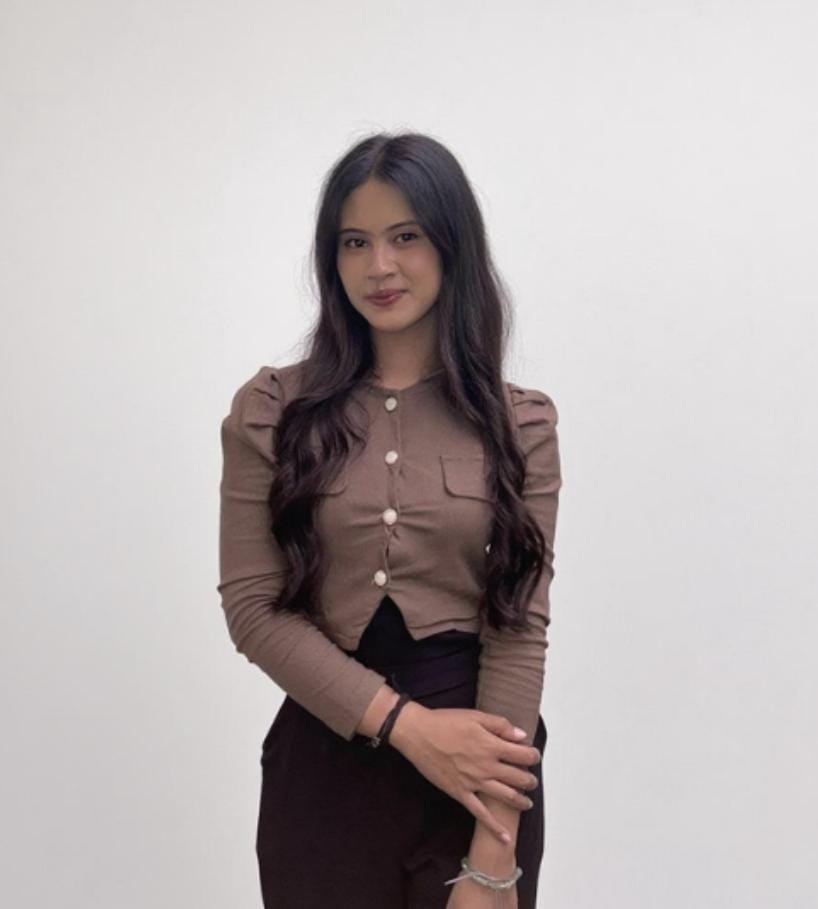

01 / ABOUT ME
Sedikit tentang saya.

Devika Velda Revina
Information Systems Student
Tempat, tanggal lahir: Bandung, 21 Mei 2006
Jenis Kelamin: Perempuan
Alamat: Bandung, Cileunyi
Perkenalan
Saya merupakan mahasiswa Program Studi Sistem Informasi. Saya memiliki ketertarikan pada dunia teknologi dan ingin terus mengembangkan pengetahuan serta keterampilan, baik melalui perkuliahan maupun kegiatan di luar akademik.
Saya senang mencoba hal baru, bekerja sama dalam tim, dan berinteraksi dengan orang lain. Melalui pengalaman organisasi dan kepanitiaan, saya belajar untuk menjadi pribadi yang lebih bertanggung jawab, komunikatif, serta mampu beradaptasi dengan lingkungan.
Hal yang saya pegang
Terus belajar
Terbuka terhadap ilmu dan pengalaman baru.
Tanggung jawab
Berusaha menyelesaikan tugas dengan baik.
Kolaborasi
Menghargai komunikasi dan kerja sama tim.